A self-contained walkthrough of the square-grid twist criterion: why a folded loop of panels lies flat in stacks only when its twist vanishes, built up one step at a time. §1 is the 2-stack baseline (Yang–You–Rosen, RSPA 2025). §2 extends it to the 3-stack 1+1+1 (I-shape) case this project targets.
All figures are idealized schematics generated by gen.py
(matplotlib → SVG); the palette matches the live tool
(grid.js). Regenerate with python3 gen.py.
Cross-references to the paper figures (Fig 10–13) are the cases each
schematic echoes.
We fold a tessellated plate. Each panel is a unit square; the fold pattern is a Hamiltonian circuit (HC) on the grid graph. Folding it flat should produce compact stacks. Two independent things can go wrong:
Twist is a property of the uncut, closed loop.
Each panel becomes a node; panels sharing a side are joined by an edge. The fold pattern lives on this graph.
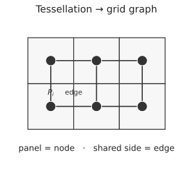
An HC visits every panel exactly once and closes up. The grid edges it crosses become creases (folds, red); edges it does not cross become slits (gray). This turns an over-constrained origami into a foldable kirigami.
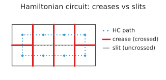
Folding panel P_i flat onto its neighbour
P_{i+1} across their shared crease is exactly a
mirror reflection across the crease line. (Note the
corner marker flips side — a reflection reverses orientation.)
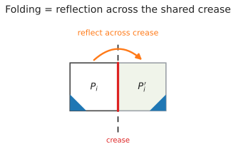
Euclidean isometry: composing two reflections across lines meeting at
angle α is a rotation by 2α
about their intersection (across parallel lines it is a
translation). So folding P_i → P_{i+1} → P_{i+2} injects a
local in-plane rotation γ = 2α.
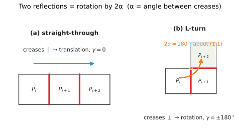
Square creases are axis-aligned, so consecutive creases are either
parallel (α = 0 → γ = 0, straight-through) or
perpendicular (α = 90° → γ = ±180°, an L-turn). The
sign distinguishes a left-L (+180) from a right-L
(−180). Straight panels contribute nothing; only
L-corners carry twist. (Paper Fig 12a.)
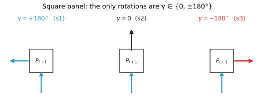
Folds alternate mountain/valley along the loop. Encode the direction
as a sign σ = (−1)^{x+y}: +1 (valley) on even
cells, −1 (mountain) on odd cells. Because every unit step
flips (x+y) mod 2, this checkerboard 2-colouring is
exactly the alternation the paper assigns by HC position.
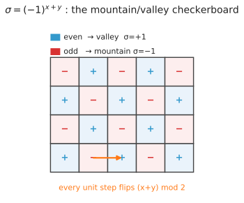
Same rotation magnitude can land P_i
under or over P_{i+2}
depending on fold order (valley-then-mountain vs the reverse) → opposite
twist sign. Multiply magnitude by direction:
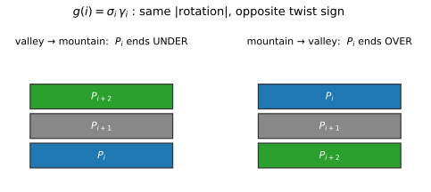
Each reflection has determinant −1, so after
k folds the net map has det = (−1)^k.
Even k → proper, panel face-up (top
stack); odd k → improper, face-down
(bottom stack). The two stacks are precisely the even/odd
reflection-count classes — and σ is exactly this parity.
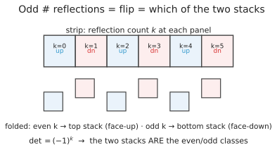
The grid graph is bipartite (checkerboard), so any
closed HC visiting all cells has even length
2n → an even number of reflections → the loop
returns proper (face-up) and closes consistently. A 2-stack loop can
never terminate on a lone odd reflection.
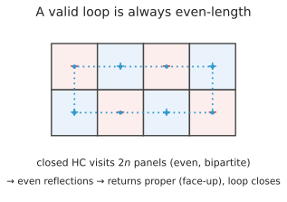
Each crease sits in two consecutive local rotations (double-counted);
summing, halving, and normalising by 2π:
For 2×4 squares the four L-corners give Odd = −2π,
Even = +2π → Σg = 0 →
Tw = 0: foldable. (Paper Fig 13b.)
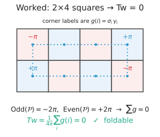
A square ring (3×3 with the centre removed) gives
Odd = 0, Even = +4π → Σg = 4π →
Tw = +1: entangled, not
foldable. (Paper Fig 13a.)
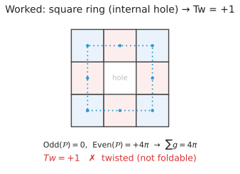
For a closed ribbon, Lk = Tw + Wr, where the
linking number Lk is a topological
invariant (cannot change without cutting), and writhe
Wr measures spatial coiling of the neutral
axis.
Lk = 0. Rigid folding never cuts →
Lk = 0 throughout.Wr = 0.0 = Tw + 0 →
Tw = 0.Any twist injected forces Wr = −Tw ≠ 0 (the loop must
coil) → entanglement. (Paper Fig 10: a band twisted by 2π
has Tw=1, Wr=0; relaxing trades it to
Tw=0, Wr=1, but Lk=1 throughout — the
entanglement never leaves without a cut.)
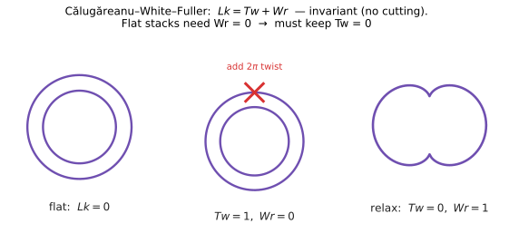
Two-stack criterion: foldable ⟺ reflection condition
holds and Tw = 0.
The 3-stack target splits the footprint into three 1-chains. Everything above is inherited; only the loop structure changes.
A 2-stack fold is a simple loop (cycle rank 1). A 1+1+1 fold has two fused footprint hubs joined by three chains — a theta graph (cycle rank 2). The 2+1 case is the same theta with one chain a 2-chain (the harder, still-open case).
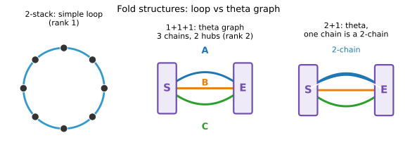
The start footprint S and exit footprint E
are rigid (their internal creases are fused). Chains A,
B, C each run S → E. Cycle rank
= E − V + 1 = 3 − 2 + 1 = 2: only two independent
cycles.
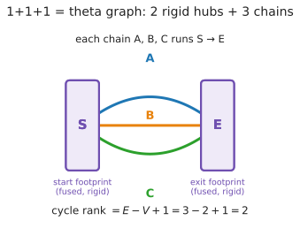
Every cycle in a theta graph is “one chain out, another chain back” —
a pairwise loop through both hubs. There are three (AB,
AC, BC) but only two are independent. Each is a genuine closed
2-stack-style loop, so CWF demands Tw = 0 on it. The hub
frames are shared, so Tw(\text{pair } i,j) = T_i − T_j,
giving:
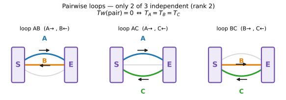
The shared S→E rotation each chain carries is traversed
in both directions of every pairwise loop (chain out,
other chain back), so its twist contribution cancels
(forward − reverse). Hence twist constrains only the agreement
T_A = T_B = T_C, never the common magnitude — that is fixed
by hub geometry (exitFootprintCheck), not twist.
Along an open chain, reflections pair up into g(i) terms
— except the last panel at the hub, a single
unpaired reflection (improper, no successor crease).
This orphan is why a naïve per-chain twist false-negatived.
Fused-hub closure re-pairs the orphan: closing a chain
pair through the rigid hub restores an even, proper closed loop where
Tw is defined.
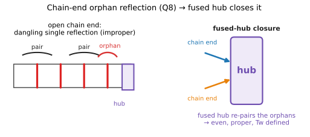
Define each chain’s twist over its interior corners with a
global checkerboard sign σ = (−1)^{x+y}
(not a per-chain index that resets — that reset was the old
false-negative bug). Require all three to agree:
Computing each T_i independently and comparing avoids
the diagonal hub-seam artifacts of the concatenated pairwise walk.
Validated against 6×6 1+1+1: foldable solutions have all pairs 0;
twisted ones carry a 720 (two full twists) on one pair.
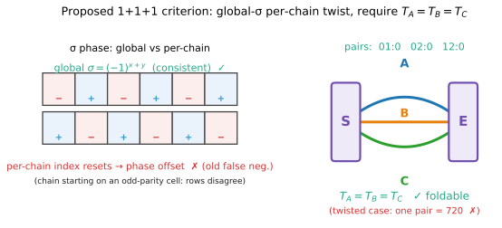
| step | 2-stack | 1+1+1 |
|---|---|---|
| structure | simple loop (rank 1) | theta graph (rank 2) |
| fold primitive | reflection across crease | same |
| local rotation | γ = 2α ∈ {0, ±180°} (square) |
same |
| direction sign | σ = (−1)^{x+y} |
same, global |
| invariant | Tw = (1/4π) Σ g(i) |
per-chain T_i |
| foldable ⟺ | Tw = 0 |
T_A = T_B = T_C |
| basis | CWF Lk = Tw + Wr |
CWF on the 2 fundamental cycles |
| open issue | — | 2+1 chain-order; hub-seam exactness (Q1) |
resources/RSPA-2025-0696...pdf (§3 reflection, §4
twist).Lk = Tw + Wr.resources/twist_diagnosis.md,
context.md (twist criterion, Q1/Q8).